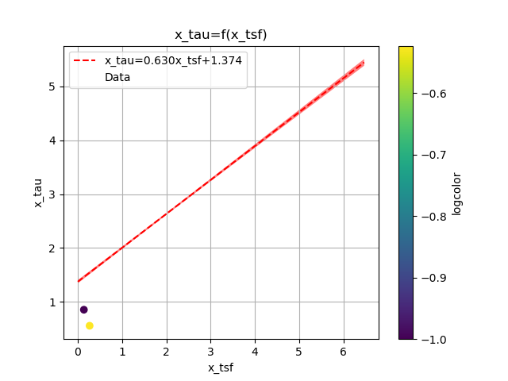
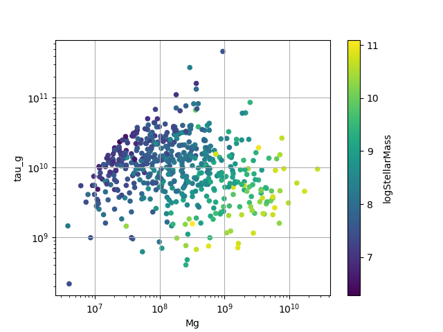
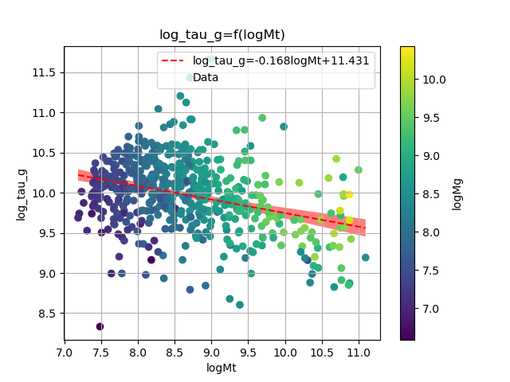

Investigations of the galaxies of the LCV
1. The Galaxies in the Local Cosmological Volume (LCV)
The Catalogue of Neigbouring Galaxies (Karachentsev, Igor D. and Makarov et al. 2013(Karachentsev, Makarov, and Kaisina 2013)) and its updated version from the “Catalog & Atlas of the LV galaxies” databas(“Catalog of the LV Galaxies” n.d.) are used to extract the K-band luminosities, the types of the galaxie1s, the mass within the Holmberg radius (M26), the Hydrogen masses of the galaxies (\(M_{HI}\)) and the SFRs based on integrated H and far-ultraviolet (FUV) measurments for galaxies within a distance of \(\approx 11\) Mpc. The SFR and MHI values contain limit flags, which we exclude from our present analysis. This gives a sample of 793 galaxies from 1248. From the remaing galaxies we have
\begin{table}[hc] \centering \begin{tabular}{lr} \toprule {} & 0 \\ \midrule Name & 793 \\ Kmag & 321 \\ FUVmag & 687 \\ TType & 793 \\ Tdw1 & 580 \\ Tdw2 & 568 \\ Bmag & 790 \\ SFR\_Ha & 566 \\ SFR\_FUV & 688 \\ K & 789 \\ MHI & 643 \\ color & 321 \\ \bottomrule \end{tabular} \end{table}| Measurment | Number of Galaxies |
The K-band values are converted to the total Stellar Masses of each galaxy according to the mass-to-light ratio of 0.6 (\cite{lelliSPARCMASSMODELS2016}), and the \(M_{HI}\) can be converted to the total mass of the gas of the galaxy using the equation \(M_g=1.33\,M_{HI}\)
The total SFR of each galaxy can be calcuated by
\[ SFR_o=\frac{SFR_{FUV}+SFR_{Ha}}{2} \]
if both \(SFR_{H\alpha},SFR_{FUV}\) measurments are available. If only one only one of them is given, then the SFR is equal to the given SFR value
\[ SFR_o=SFR_i,\ \text{if } SFR_j=0,i\neq j,\ i,j=FUV, H_a \]
The condition \(SFR_o\geq 10^{-3}M_\odot yr^{-1}\) leaves 579 galaxies. This condition is applied due to the reasons given in the P. Kroupa,M. Haslbauer, I. Banik, S. T. Nagesh and J. Pflamm-Altenburg et al. 2020 \cite{kroupaConstraintsStarFormation2020}
2. Types of galaxies
Using the dataset of 1248 galaxies, do before using the condition and removing the galaxies with the flags, the below histograms can be plotted.
Most of the galaxies in the LCV are Higly Irregular galaxies followed by lenticular galaxies
Out of the 1248 galaxies the 1022 are dwarf galaxies
Most dwarf galaxies have low brightness and are irregulars followed by Dwarf spheroidal.

Figure 1: The classification by de Vaucouleurs et al. (1991) is used for the morphology of the galaxies

Figure 2: Dwarf galaxy morphology

Figure 3: Dwarf galaxy surface brightness morphology, where: H = high; N = normal; L = low; X = extremely low.
3. Delayed-\(\tau\) model
According to P. Kroupa et al. 2020(Kroupa et al. 2020) current star formation rates of galaxies can be described by the ’delayed-\(\tau\)’ mode as
\begin{equation} \label{eq:SFR} SFR_{0,del}=\frac{A_{del}xe^{-x}}{\tau},\text{ where } x=\frac{t_{sf}}{\tau} \end{equation}where \(\tau\) is the star formation time-scale, \(t_{sf}\) is the real time of star formation in a given galaxy and \(A_{del}\) a normalization constant.
The average SFR is
\begin{equation}\label{eq:av_SFR-x} \overline{SFR_{del}}=\frac{A_{del}}{t_{sf}}[1-(1+x)e^{-x}] \end{equation}and can also be defined by the present day stellar mass
\begin{equation}\label{eq:av_SFR M*} \overline{SFR}=\frac{\zeta M_*}{t_{sf}} \end{equation}where \(\zeta\) accommodates for mass-loss through stella evolution and \(\zeta\approx 1.3\)
This is a system of 2 equations and 3 variables, since Adel has never been calculated
3.1. Constant \(t_{sf}\)
The observed ages of galactic discs are \(t_{sf}\approx 12\) Gyr(Knox, Hawkins, and Hambly 1999), so assuming an approximation of \(t_{sf}=12.5\) Gyr, the \(\overline{SFR_{del}}\) can be calcuated, from the equation (\ref{eq:av_SFR M*}).
After that the equation of ratio
\begin{equation} \label{eq:ratio} \frac{\overline{SFR_{del}}}{SFR_{0,del}}=\frac{e^x-x-1}{x^2} \end{equation}can be solved numerically for \(x\) and using the equations (\Ref{eq:SFR}) and (\Ref{eq:av_SFR-x}) the \(A_{del}\) and \(\tau\) of each galaxy are found.
\begin{table}[hc] \centering \begin{tabular}{lrrr} \toprule {} & A\_tsf & tau & x\_tsf \\ \midrule count & 5.78E+02 & 5.79E+02 & 5.79E+02 \\ mean & 2.25E+12 & 1.09E+11 & 1.85E+00 \\ std & 3.94E+13 & 1.04E+12 & 1.48E+00 \\ min & 2.48E+07 & 1.93E+09 & 5.59E-04 \\ 25\% & 1.41E+08 & 4.18E+09 & 5.65E-01 \\ 50\% & 6.84E+08 & 7.79E+09 & 1.60E+00 \\ 75\% & 5.70E+09 & 2.21E+10 & 2.99E+00 \\ max & 9.10E+14 & 2.24E+13 & 6.47E+00 \\ \bottomrule \end{tabular} \end{table}
Figure 4: \(A_{del} = f(x)\) for constant tsf

3.2. Constant \(\tau\)
Assuming for an constant \(\tau=3.5\) Gyr, we cannot use the same \(\overline{SFR}\) since it depends on \(t_{sf}\). Using the equations~(\Ref{eq:av_SFR M*}) and (\Ref{eq:ratio})
\[ \frac{\overline{SFR_{del}}}{SFR_{0,del}}=\frac{e^x-x-1}{x^2}\Leftrightarrow \frac{e^x-x-1}{x}=\frac{\zeta M_*}{SFR\cdot\tau} \]
using this equation \(x\) and \(A_{del}\) can be calcuated numerically.
\begin{table}[hc] \centering \begin{tabular}{lrrr} \toprule {} & A\_tau & x\_tau & tsf \\ \midrule count & 5.79E+02 & 5.79E+02 & 5.79E+02 \\ mean & 4.59E+09 & 2.54E+00 & 8.89E+09 \\ std & 1.50E+10 & 9.57E-01 & 3.35E+09 \\ min & 9.87E+06 & 4.07E-01 & 1.42E+09 \\ 25\% & 6.50E+07 & 1.87E+00 & 6.55E+09 \\ 50\% & 2.37E+08 & 2.44E+00 & 8.54E+09 \\ 75\% & 1.12E+09 & 3.08E+00 & 1.08E+10 \\ max & 1.06E+11 & 5.77E+00 & 2.02E+10 \\ \bottomrule \end{tabular} \end{table}
Figure 5: \(A_{del} = f(x)\) for constant \(\tau\)

3.3. Comparing the two results
3.3.1. Comparing the \(x\)’s
Comparing the two different results for x, we see that the \(x|_\tau\) has a lower \(\sigma\)
\begin{table}[hc] \centering \begin{tabular}{lrr} \toprule {} & x\_tau & x\_tsf \\ \midrule count & 5.79E+02 & 5.79E+02 \\ mean & 2.54E+00 & 1.85E+00 \\ std & 9.57E-01 & 1.48E+00 \\ min & 4.07E-01 & 5.59E-04 \\ 25\% & 1.87E+00 & 5.65E-01 \\ 50\% & 2.44E+00 & 1.60E+00 \\ 75\% & 3.08E+00 & 2.99E+00 \\ max & 5.77E+00 & 6.47E+00 \\ \bottomrule \end{tabular} \end{table}
Figure 6: Comparing the two x’s, According to their total masses

Figure 7: \(x|_\tau=f(M_t)\), with their color index

Figure 8: Comparing the two x, according to their total mass

Figure 9: Comparing the two x, according to their type

Figure 10: Comparing the two x, according to their color index
The two results are interrelated through the equation:
\begin{equation}\label{eq:x_tsf-x_tau} \begin{align} & x|_\tau = (6.30(6) \times 10^{-1})\cdot x|_{tsf} + (1.374(15) \times 10^{0}) \\ & \textrm{with correlation } R^2=94\% \end{align} \end{equation}and from the plots the following conclusions can be drawn:
- The galaxies with a higher total mass deviate less from the linear fit and are older.
- The younger galaxies are mainly later types of galaxies
- For lower x’s, the galaxies have a lower color index which indicates that they are younger. So the values are inline with the experimental values.
3.3.2. Comparing the normalization constants

Figure 11: Comparing the two Adel

Figure 12: Comparison of the 2 Adels according to their \(x\)

Figure 13: Comparison of the 2 Adels according to their total masses
For high \(x\) and high masses the two Adels have a high correlation. Specifically:
- For high \(x\) the \(A_{del}|_{\tau}-A_{del}|_{t_{sf}}\) plot follows a \(y=x\) trend, which means that for older stars and stars with a low star formation timescale \(\tau\), the normalization constant is the same despite the method used to calculate it.
- The same is true for more massive galaxies, since they deviate less from the \(y=x\) line
4. The gas depletion timescale \(\tau_g\)
The gas depletion timescale \(\tau_g\) measures the time taken by a galaxy to exhaust its gas content Mg given the current SFR(Nagesh et al. 2023; Pflamm-Altenburg and Kroupa 2009). \[ \tau_g=\frac{M_g}{\dot{M_*}}=\frac{M_g}{SFR} \]

Figure 14: \(\tau_g = f(M_g)\), with the Stellar Mass of the galaxies

Figure 15: Correlation of the \(\tau_g\) with the SFR and the Stellar mass
Even though the logarithmic correlation is low (\(R^2 = 21\%\)), there seems to be a pattern wherein the decrease of \(\tau_g\) corresponds to an increase in the values of the Stellar Mass and the current star formation \(SFR_0\).

Figure 16: Correlation of the \(\tau_g\) with the total mass and the mass of the gas
Footnotes:
TType=Morphology type code according to the classification by de Vaucouleurs/ Tdw1=Dwarf galaxy morphology/ Tdw2=Dwarf galaxy surface brightness morphology